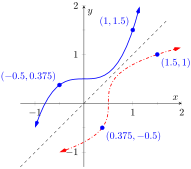
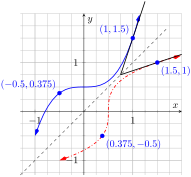
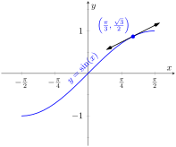
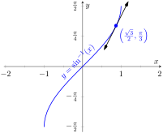

Recall that a function \(y=f(x)\) is said to be one-to-one if it passes the horizontal line test; that is, for two different \(x\) values \(x_1\) and \(x_2\text{,}\) we do not have \(f\mathopen{}\left(x_1\right)\mathclose{}=f\mathopen{}\left(x_2\right)\mathclose{}\text{.}\) In some cases the domain of \(f\) must be restricted so that it is one-to-one. For instance, consider \(f(x)=x^2\text{.}\) Clearly, \(f(-1)= f(1)\text{,}\) so \(f\) is not one-to-one on its regular domain, but by restricting \(f\) to \((0,\infty)\text{,}\)\(f\) is one-to-one.
Now recall that one-to-one functions have inverses. That is, if \(f\) is one-to-one, it has an inverse function, denoted by \(f^{-1}\text{,}\) such that if \(f(a)=b\text{,}\) then \(f^{-1}(b) = a\text{.}\) The domain of \(f^{-1}\) is the range of \(f\text{,}\) and vice-versa. For ease of notation, we set \(g=f^{-1}\) and treat \(g\) as a function of \(x\text{.}\)
Since \(f(a)=b\) implies \(g(b)=a\text{,}\) when we compose \(f\) and \(g\) we get a nice result:
In general, \(f\big(g(x)\big) = x\) and \(g\big(f(x)\big) = x\text{.}\) This gives us a convenient way to check if two functions are inverses of each other: compose them and if the result is \(x\) (on the appropriate domains), then they are inverses.
When the point \((a,b)\) lies on the graph of \(f\text{,}\) the point \((b,a)\) lies on the graph of \(g\text{.}\) This leads us to discover that the graph of \(g\) is the reflection of \(f\) across the line \(y=x\text{.}\) In Figure 2.7.1 we see a function graphed along with its inverse. See how the point \((1,1.5)\) lies on one graph, whereas \((1.5,1)\) lies on the other. Because of this relationship, whatever we know about \(f\) can quickly be transferred into knowledge about \(g\text{.}\)

Figure2.7.1.A function \(f\) along with its inverse \(f^{-1}\text{.}\) (Note how it does not matter which function we refer to as \(f\text{;}\) the other is \(f^{-1}\text{.}\))
For example, consider Figure 2.7.2 where the tangent line to \(f\) at the point \((1,1.5)\) is drawn. That line has slope \(3\text{.}\) Through reflection across \(y=x\text{,}\) we can see that the tangent line to \(g\) at the point \((1.5,1)\) has slope \(1/3\text{.}\) Their slopes are reciprocals. This should make sense since reflecting a line (such as a tangent line) across the line \(y=x\) switches the \(x\) and \(y\) values. Also consider the point \((0,0.5)\) on the graph of \(f\text{,}\) where the tangent line is horizontal. At the point \((0.5,0)\) on \(g\text{,}\) the tangent line is vertical.
More generally, consider the tangent line to \(f\) at the point \((a,b)\text{.}\) That line has slope \(\fp(a)\text{.}\) Through reflection across \(y=x\text{,}\) we can extend our above observation to say that the tangent line to \(g\) at the point \((b,a)\) should have slope \(1/\fp(a)\text{.}\) This then tells us that \(g'(b)=1/\fp(a)\text{.}\)

Figure2.7.2.Corresponding tangent lines drawn to \(f\) and \(f^{-1}\)
The information from these two graphs is summarized in Table 2.7.3 below:
Table2.7.3.
Information about \(f\)
Information about \(g=f^{-1}\)
\((1,1.5)\) lies on \(f\)
\((1.5,1)\) lies on \(g\)
Slope of tangent line to \(f\) at \(x=1\) is \(3\)
Slope of tangent line to \(g\) at \(x=1.5\) is \(1/3\)
\(\fp(1) = 3\)
\(g'(1.5) = 1/3\)
We have discovered a relationship between \(\fp\) and \(g'\) in a mostly graphical way. We can realize this relationship analytically as well. Let \(y = g(x)\text{,}\) where again \(g = f^{-1}\text{.}\) We want to find \(y'\text{.}\) Since \(y = g(x)\text{,}\) we know that \(f(y) = x\text{.}\) Using the The Chain Rule and Implicit Differentiation, take the derivative of both sides of this last equality.
Let \(f\) be differentiable and one-to-one on an open interval \(I\text{,}\) where \(\fp(x) \neq 0\) for all \(x\) in \(I\text{,}\) let \(J\) be the range of \(f\) on \(I\text{,}\) let \(g\) be the inverse function of \(f\text{,}\) and let \(f(a) = b\) for some \(a\) in \(I\text{.}\) Then \(g\) is a differentiable function on \(J\text{,}\) and in particular,
The results of Theorem 2.7.4 are not trivial; the notation may seem confusing at first. Careful consideration, along with examples, should earn understanding.
In the next example we apply Theorem 2.7.4 to the arcsine function.
Example2.7.5.Finding the derivative of an inverse trigonometric function.
Let \(y = \arcsin(x) = \sin^{-1}(x)\text{.}\) Find \(y'\) using Theorem 2.7.4.
Adopting our previously defined notation, let \(g(x) = \arcsin(x) \) and \(f(x) = \sin(x)\text{.}\) Thus \(\fp(x) = \cos(x)\text{.}\) Applying the theorem, we have
This last expression is not immediately illuminating. Drawing a figure will help, as shown in Figure 2.7.6. Recall that the sine function can be viewed as taking in an angle and returning a ratio of sides of a right triangle, specifically, the ratio “opposite over hypotenuse.” This means that the arcsine function takes as input a ratio of sides and returns an angle. The equation \(y=\arcsin(x)\) can be rewritten as \(y=\arcsin(x/1)\text{;}\) that is, consider a right triangle where the hypotenuse has length \(1\) and the side opposite of the angle with measure \(y\) has length \(x\text{.}\) This means the final side has length \(\sqrt{1-x^2}\text{,}\) using the Pythagorean Theorem.
Figure2.7.6.A right triangle defined by \(y=\sin^{-1}(x/1)\) with the length of the third leg found using the Pythagorean Theorem
Remember that the input \(x\) of the arcsine function is a ratio of a side of a right triangle to its hypotenuse; the absolute value of this ratio will never be greater than \(1\text{.}\) Therefore the inside of the square root will never be negative.
In order to make \(y=\sin(x)\) one-to-one, we restrict its domain to \([-\pi/2,\pi/2]\text{;}\) on this domain, the range is \([-1,1]\text{.}\) Therefore the domain of \(y=\arcsin(x)\) is \([-1,1]\) and the range is \([-\pi/2,\pi/2]\text{.}\) When \(x=\pm 1\text{,}\) note how the derivative of the arcsine function is undefined; this corresponds to the fact that as \(x\to \pm1\text{,}\) the tangent lines to arcsine approach vertical lines with undefined slopes.


Figure2.7.7.Graphs of \(\sin(x)\) and \(\sin^{-1}(x)\) along with corresponding tangent lines
In Figure 2.7.7 we see \(f(x) = \sin(x)\) and \(f^{-1}(x) = \sin^{-1}(x)\) graphed on their respective domains. The line tangent to \(\sin(x)\) at the point \(\left(\pi/3, \sqrt{3}/2\right)\) has slope \(\cos(\pi)/3 = 1/2\text{.}\) The slope of the corresponding point on \(\sin^{-1}(x)\text{,}\) the point \(\left(\sqrt{3}/2,\pi/3\right)\text{,}\) is
verifying yet again that at corresponding points, a function and its inverse have reciprocal slopes.
Using similar techniques, we can find the derivatives of all the inverse trigonometric functions. In Table 2.7.8 we show the restrictions of the domains of the standard trigonometric functions that allow them to be invertible.
Table2.7.8.Domains and ranges of the trigonometric and inverse trigonometric functions
Function
Domain
Range
\(\sin(x)\)
\([-\pi/2, \pi/2]\)
\([-1,1]\)
\(\sin^{-1}(x)\)
\([-1,1]\)
\([-\pi/2, \pi/2]\)
\(\cos(x)\)
\([0,\pi]\)
\([-1,1]\)
\(\cos^{-1}(x)\)
\([-1,1]\)
\([0,\pi]\)
\(\tan(x)\)
\((-\pi/2,\pi/2)\)
\((-\infty,\infty)\)
\(\tan^{-1}(x)\)
\((-\infty,\infty)\)
\((-\pi/2,\pi/2)\)
\(\csc(x)\)
\([-\pi/2,0)\cup (0, \pi/2]\)
\((-\infty,-1]\cup [1,\infty)\)
\(\csc^{-1}(x)\)
\((-\infty,-1]\cup [1,\infty)\)
\([-\pi/2,0)\cup (0, \pi/2]\)
\(\sec(x)\)
\([0,\pi/2)\cup (\pi/2,\pi]\)
\((-\infty,-1]\cup [1,\infty)\)
\(\sec^{-1}(x)\)
\((-\infty,-1]\cup [1,\infty)\)
\([0,\pi/2)\cup (\pi/2,\pi]\)
\(\cot(x)\)
\((0,\pi)\)
\((-\infty,\infty)\)
\(\cot^{-1}(x)\)
\((-\infty,\infty)\)
\((0,\pi)\)
Theorem2.7.9.Derivatives of Inverse Trigonometric Functions.
The inverse trigonometric functions are differentiable on all open sets contained in their domains (as listed in Table 2.7.8) and their derivatives are as follows:
Note how each derivative is the negative of the derivative of its “co” function. Because of this, derivatives of \(\sin^{-1}(x)\text{,}\)\(\tan^{-1}(x)\text{,}\) and \(\sec^{-1}(x)\) are used almost exclusively throughout this text.
In Section 2.3, we stated without proof or explanation that \(\lzoo{x}{\ln(x)}=\frac{1}{x}\text{.}\) We can justify that now using Theorem 2.7.4, as shown in the example.
Example2.7.10.Finding the derivative of \(y=\ln(x)\).
Use Theorem 2.7.4 to compute \(\lzoo{x}{\ln(x)}\text{.}\)
View \(y= \ln(x)\) as the inverse of \(y = e^x\text{.}\) Therefore, using our standard notation, let \(f(x) = e^x\) and \(g(x) = \ln(x)\text{.}\) We wish to find \(g'(x)\text{.}\)Theorem 2.7.4 gives:
In this chapter we have defined the derivative, given rules to facilitate its computation, and given the derivatives of a number of standard functions. We restate the most important of these in the following theorem, intended to be a reference for further work.
Theorem2.7.11.Glossary of Derivatives of Elementary Functions.
Let \(f\) and \(g\) be differentiable functions, and let \(a\text{,}\)\(c\) and \(n\) be real numbers, \(a \gt 0\text{,}\)\(n\neq 0\text{.}\)
In your own words explain what it means for a function to be “one-to-one.”
3.
If \((1,10)\) lies on the graph of \(y=f(x)\text{,}\) what can be said about the graph of \(y=f^{-1}(x)\text{?}\)
4.
If \((1,10)\) lies on the graph of \(y=f(x)\) and \(\fp(1) = 5\text{,}\) what can be said about \(y=f^{-1}(x)\text{?}\)
Problems
Exercise Group.
Verify that the given functions are inverses.
5.
\(f(x) = 2x+6\) and \(g(x) = \frac{1}{2}x-3\)
6.
\(f(x) = x^2+6x+11\text{,}\)\(x\geq 3\) and \(g(x) = \sqrt{x-2}-3\text{,}\)\(x\geq 2\)
7.
\(f(x) = \frac{3}{x-5}\text{,}\)\(x\neq 5\) and \(g(x) = \frac{3+5x}{x}\text{,}\)\(x\neq 0\)
8.
\(f(x) = \frac{x+1}{x-1}\text{,}\)\(x\neq 1\) and \(g(x) = f(x)\)
Exercise Group.
An invertible function \(f(x)\) is given along with a point that lies on its graph. Using Theorem 2.7.4, evaluate \(\left(f^{-1}\right)'(x)\) at the indicated value.
9.
The point \({\left(3,19\right)}\) is on the graph of \(f(x) = {5x+4}\text{.}\) Find \(\left(f^{-1}\right)'({19})\text{.}\)
10.
The point \({\left(2,9\right)}\) is on the graph of \(f(x) = {x^{2}-2x+9}, x\geq 1\text{.}\) Find \(\left(f^{-1}\right)'({9})\text{.}\)
11.
The point \(\left({\frac{\pi }{12}},{\frac{\sqrt{2}}{2}}\right)\) is on the graph of \(f(x) = {\sin\!\left(3x\right)},
{\frac{-\pi }{6}}\leq x\leq {\frac{\pi }{6}}\text{.}\) Find \(\left(f^{-1}\right)'\left({\frac{\sqrt{2}}{2}}\right)\text{.}\)
12.
The point \({\left(5,49\right)}\) is on the graph of \(f(x) = {x^{3}-15x^{2}+60x-1}\text{.}\) Find \(\left(f^{-1}\right)'({49})\text{.}\)
13.
The point \({\left(2,{\frac{1}{33}}\right)}\) is on the graph of \(f(x) = {\frac{1}{1+x^{5}}}, x\geq 0\text{.}\) Find \(\left(f^{-1}\right)'\left({{\frac{1}{33}}}\right)\text{.}\)
14.
The point \({\left(0,9\right)}\) is on the graph of \(f(x) = {9e^{6x}}\text{.}\) Find \(\left(f^{-1}\right)'({9})\text{.}\)